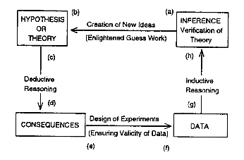

附錄 C — 協作版教科書寫作計畫
C.1 寫作資源
C.1.1 資源1 Forrt O&R 101
取用範圍包括Week 1 ~ Week 6 以及Week 8。各部分主題與核心文獻列表如下。
| 週次 | 主題 | 核心文獻 |
|---|---|---|
| 1 | Reproducibility and replicability knowledge | (munafoManifestoReproducibleScience2017?) , (gelmanGardenForkingPaths2013?) |
| 2 | Conceptual and statistical knowledge | |
| 3 | Reproducible analyses | |
| 4 | Preregistration | |
| 5 | FAIR data and materials | |
| 6 | Replication research | |
| 8 | Pedagogy | Chopik et al. (2018), (frankTeachingReplication2012?), (waggePublishingResearchUndergraduate2019a?) |
C.1.2 資源2 醫學研究證據等級
來源包括全球脊髓研究期刊的編輯啟事 (globalspinej.DefinitionLevelsEvidence2015?) 以及維基百科「證據等級」條目 (HierarchyEvidence2023?) 。說明實驗研究法與心理學領域會使用的各種研究方法，以符合科學方法標準運用，能展現的證據強度。
C.1.3 資源3 科學方法圖解
採用 Rao (1997) 提供的科學之輪圖解，說明實驗科學的循環過程。

C.1.4 資源4 Scribbr研究方法條目
節取與實驗研究法有直接內容的條目。
C.1.5 資源5 9項認知心理學再現研究
C.2 預想章節內容
待協作者會議討論
Chapter 1
以開放科學取向學習實驗研究法的理由：取用資源1之week 8核心論文，搭配資源2討論實驗研究方在心理學研究應達到，但是未真正達到的原因。
整合資料1之week 1核心論文的歧路花園觀點，以及資源3科學研究流程圖解，討論研究流程各環節的學習關鍵及誤區。
以完成一項實驗研究流程會經過的路口及要做的選擇，擬訂全書布局。
Chapter 2
核心主題：演繹推理
資源1 week3 預先註註冊核心論文
資源4條目： Writing Strong Research Questions , Writing hypotheses, Inductive vs. Deductive Research Approach , What Is Deductive Reasoning?
可能遭遇的QRP
Chapter 3
核心主題：設計有高證據力的實驗
資源1 week 1, week 2, week4, week 6
資源4條目：Guide to Experimental Design ,
資源5：重覆實驗設定
可能遭遇的QRP
Chapter 4
核心主題：歸納推理
資源1 week 3, week 4, week 5, week 6
資源4條目：Inductive vs. Deductive Research Approach , Inductive Reasoning ,
可能遭遇的QRP
Chapter 5
核心主題：可重製的記憶實驗
資源5記憶實驗公開資料
Chapter 6
核心主題：可重製的知覺實驗
資源5知覺實驗公開資料
Chapter 7
核心主題：可重製的語言實驗
資源5語言實驗公開資料
Chapter 8
- 核心主題：計畫及報告的寫作與表達
Appendix
如何產生新想法
效果量的計算方法
其他…